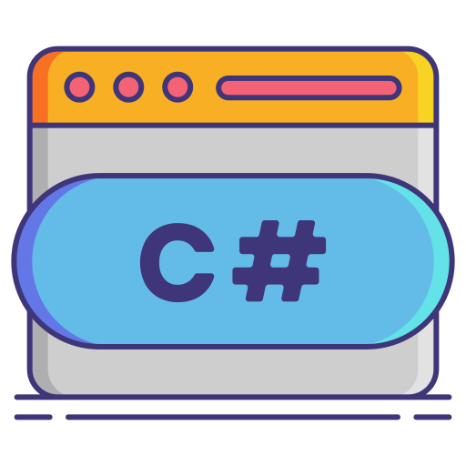

TOP 5 LENGUAJES DE PROGRAMACION MAS POPULARES
-
Python

Python es un lenguaje de programación de código abierto,
Se usa en muchos campos como el aprendizaje automático, la automatización y la computación científica. También puede servir como un lenguaje de scripting para aplicaciones web. Asimismo, hay diversos frameworks de Python como Django, TurboGears y Flask, que dan soporte a los programadores en el desarrollo de aplicaciones complejas.
-
JavaScript

JavaScript es un lenguaje de programación o de secuencias de comandos que te permite implementar funciones complejas en páginas web. Aunque es más conocido como el lenguaje de secuencias de comandos para páginas web, también se utiliza en muchos otros entornos fuera del navegador, como Node.js, Apache
-
Java

Java es un lenguaje de programación utilizado para crear software compatible con una gran diversidad de sistemas operativos. Este lenguaje tiene la particularidad de ser compilado e interpretado al mismo tiempo; esto significa que es un lenguaje simplificado que convierte automáticamente el código en instrucciones de máquina
-
C#

C# es un lenguaje desarrollado por Microsoft y se utiliza principalmente en el desarrollo de aplicaciones Windows y juegos y tambien para el backend con .net.
-
C++

C++ es un lenguaje de programación de propósito general que se utiliza principalmente para el desarrollo de software de sistemas, aplicaciones de escritorio, juegos y software de alto rendimiento, entre otras aplicaciones. A pesar de ser una extensión del lenguaje de programación C, C++ ha evolucionado y se ha mantenido relevante a lo largo de los años.